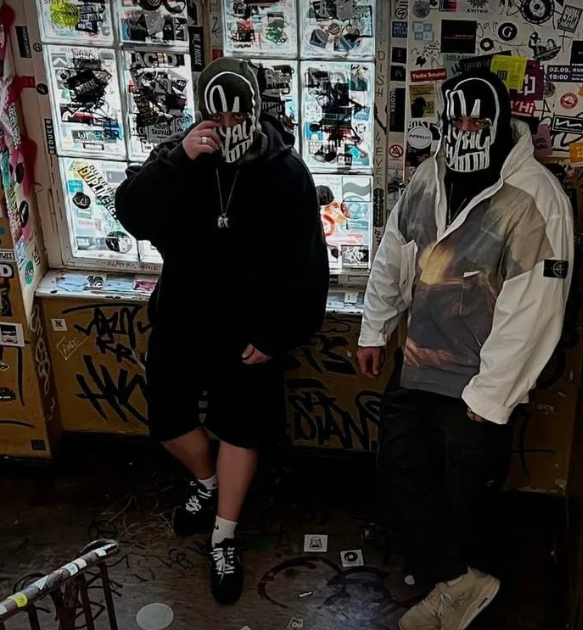

The Locked Club is a side project of two talented musicians: Ilya Gadaev and Dima Nova. They are also known for the mega popular Cream Soda project. Ilya and Dima, experimenting with the sound, came up with a new genre - Russian Techno Electro Punk. And the Russian word is here for a reason. If you delve into the creativity of the band, you can see that they have always pursued one idea - a unique RUSSIAN sound, which distinguishes Cream Soda and a Locked Club from other groups with a similar genre. The sound created by them is so wonderful that on the release of stvol.tv (a platform for performances by Russian DJs) they immediately gained a huge number of views. This video brought them incredible success in the "underground" hangout. It is also worth noting the word PUNK in the name of the genre, their tracks are imbued with the spirit of punk songs, and what they do at performances...
